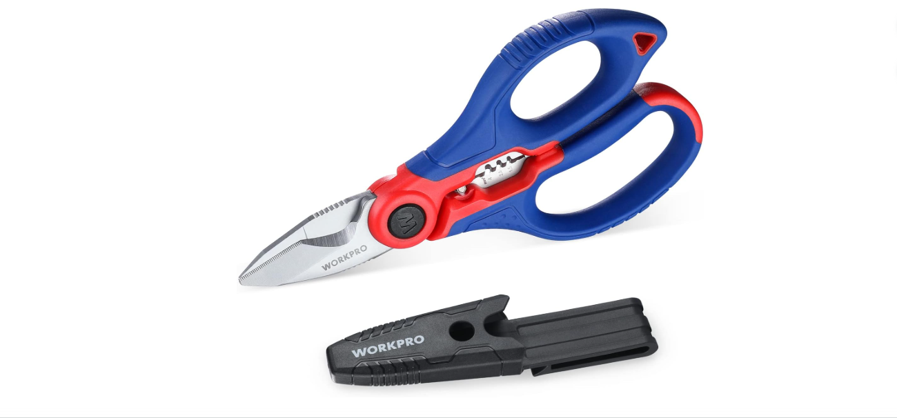

1. Piensa en el trabajo
Define para qué necesitas la herramienta y con qué frecuencia la utilizarás. No siempre necesitas el modelo más caro.
Herramientas, construcción, electricidad y solar
Encuentra herramientas y materiales para tus proyectos.

Una opción para trabajos de bricolaje, montaje y pequeñas reparaciones. Antes de comprar, revisa la batería, los accesorios incluidos y las condiciones de venta.
Consulta el precio actual en Amazon.
Enlace de afiliado
Ver en Amazon
Tijeras de acero inoxidable pensadas para trabajos de electricidad, corte de cables y pelado de conductores. Incluyen funda con clip para transportarlas con comodidad.
Consulta el precio actual en Amazon.
Enlace de afiliado
Ver en Amazon
Herramienta para realizar mediciones eléctricas según las funciones del modelo. Comprueba los rangos de medida, las protecciones y las características de seguridad antes de comprar.
Consulta el precio actual en Amazon.
Enlace de afiliado
Ver en Amazon
Una herramienta para ayudar a alinear y nivelar durante reformas, colocaciones y trabajos de construcción. Revisa el alcance, la precisión y los accesorios incluidos en la ficha.
Consulta el precio actual en Amazon.
Enlace de afiliado
Ver en Amazon
Limpiador concentrado pensado para la limpieza de paneles fotovoltaicos. Puede ayudar a eliminar polvo, polen, hollín, grasa y otros residuos acumulados sobre la superficie.
Revisa siempre las instrucciones de dilución y aplicación del fabricante antes de usarlo.
Consulta el precio actual en Amazon.
Enlace de afiliado
Ver en Amazon
Pensado para la limpieza de placas solares, ventanas y superficies exteriores. Antes de comprar, comprueba la longitud, el peso, la conexión de agua y los accesorios incluidos.
Consulta el precio actual en Amazon.
Enlace de afiliado
Ver en AmazonElegir una herramienta adecuada ayuda a trabajar con más comodidad y a evitar compras innecesarias. Antes de decidirte, ten en cuenta estos consejos.
Define para qué necesitas la herramienta y con qué frecuencia la utilizarás. No siempre necesitas el modelo más caro.
Revisa las especificaciones, los accesorios incluidos, la garantía y la compatibilidad con otros equipos que ya tengas.
Comprueba las protecciones y las instrucciones del fabricante. En trabajos eléctricos, utiliza equipos adecuados para la medición y las condiciones del circuito.
Selección de herramientas y productos que pueden resultar interesantes por sus características y utilidad. Consulta siempre el precio y las condiciones actuales en la tienda.
Taladros, accesorios y herramientas para bricolaje, montaje y pequeñas reparaciones.
Ver herramientasEquipos de medición y herramientas pensadas para trabajos y comprobaciones eléctricas.
Ver electricidadProductos y accesorios para limpieza y mantenimiento básico de placas solares.
Ver productos solares